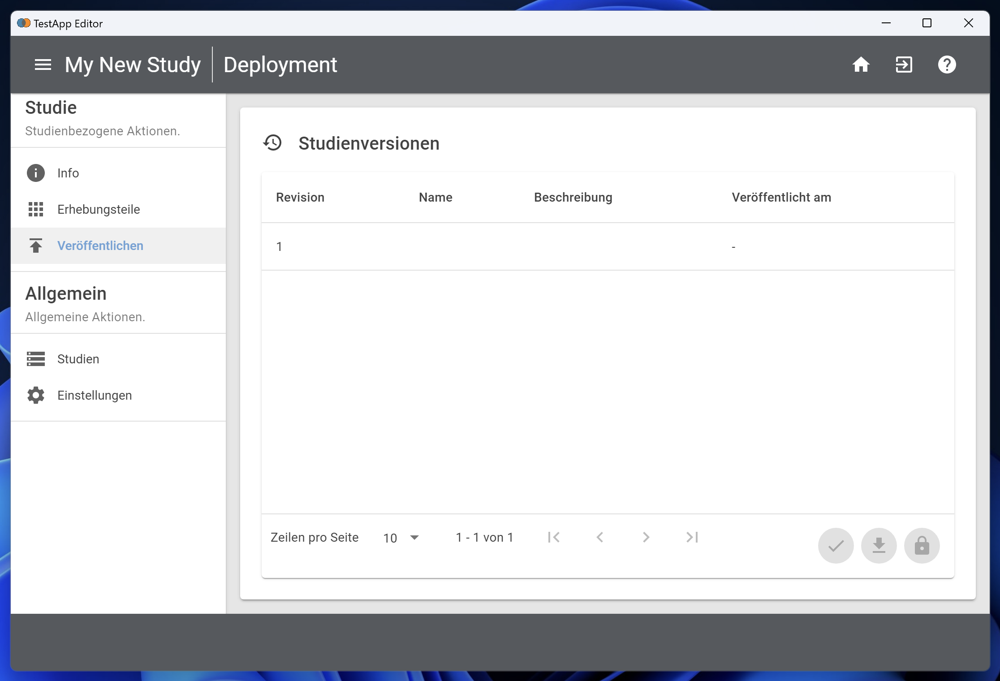
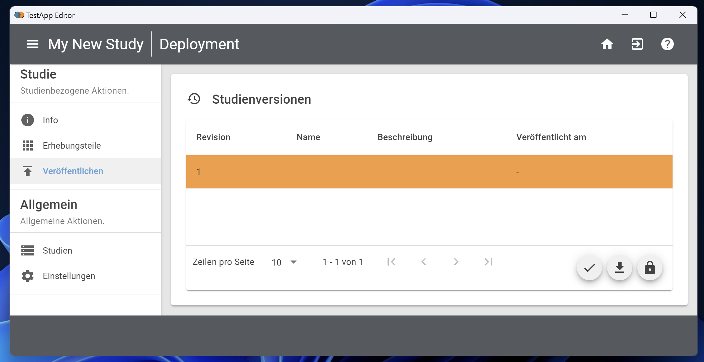
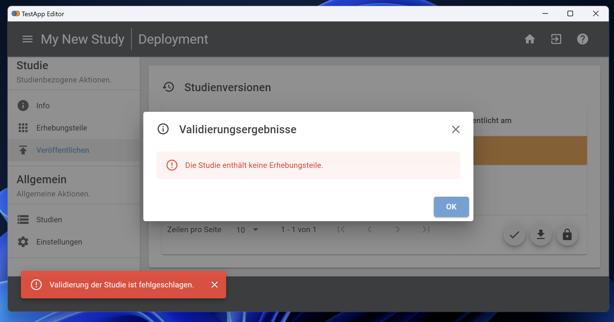
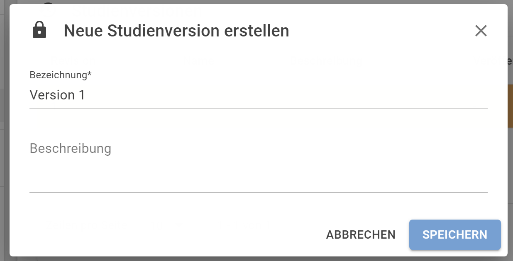
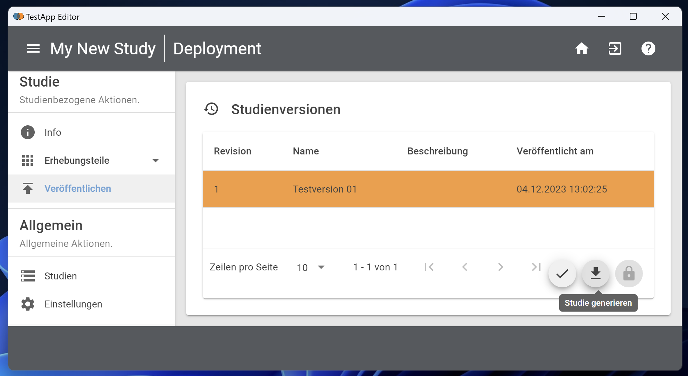

Datenerhebung: Veröffentlichen & Exportieren / Data Collection: Publish & Export
Die Konfiguration von Studien und den darin enthaltenen Erhebungsteil(en) erfolgt im IRTlib Editor. Änderungen werden innerhalb des IRTlib Editors immer gespeichert, wenn das Disketten-Symbol unten rechts geklickt wird. Während der Vorbereitung einer Studie speichert man die Änderungen, wenn sie übernommen werden sollen. Aber sobald die Vorbereitung abgeschlossen ist, sollten Änderungen nicht mehr möglich sein oder zumindest nachvollzogen werden, damit die Version im IRTlib Editor der Version im IRTlib Player entspricht.
Um diesen Prozess der Verwendung von IRTlib Editor und IRTlib Player zu unterstützen, ist folgendes Konzept implementiert. Damit zu jeder Zeit eindeutig benennbar ist, mit welcher Konfiguration einer Studie eine Datenerhebung durchgeführt wird, muss die Konfiguration vor der Übertragung an einen IRTlib Player versiegelt werden.
Das geschieht in der Ansicht Veröffentlichen einer Studie, in welcher die Studienversionen aufgelistet werden. Bei einer neuen Studie sieht diese Ansicht zunächst so aus:

In diesem Zustand können Sie Änderungen an der Einstellung der Studie und aller enthaltenen Erhebungsteile vornehmen.
Die Schaltflächen zum Validieren, Herunterladen und Veröffentlichen von Studien sind ausgegraut, weil keine Revision markiert ist. Durch Klick auf die Zeile mit der noch nicht veröffentlichten Revision 1 sind die Schaltflächen aktivierbar:

Bevor Sie nun fortfahren, prüfen Sie bitte, ob Sie an alles gedacht haben. Dafür dient die folgende Checkliste.
Checkliste vor dem Veröffentlichen
- Ist die Anmeldung konfiguriert?
Damit nach dem Start des IRTlib Players die richtige Studie gestartet werden kann, muss ein zu der geplanten Verwendung passender Loginmodus konfiguriert sein. Die Definition des Loginmodus ist in der Studienkonfiguration im Abschnitt Login möglich.
- Ist ein Testleitermenü konfiguriert?
Wenn im Offline IRTlib Player der Kiosk-Modus aktiviert ist, kann das Beenden der Anwendung ohne konfiguriertes Testleitermenü schwierig bzw. unmöglich sein. Die Definition von Tastenkombination und Passwörtern mit Rollen erfolgt in der Studienkonfiguration im Abschnitt Testleitermenü.
- Sind die Items eingefügt?
Die Assessmentinhalte werden in einem oder mehreren Erhebungsteilen konfiguriert. Die meisten CBA ItemBuilder-Tasks werden sich im Abschnitt Items eines Erhebungsteils befinden.
- Sind die Laufzeitumgebungen (Runtimes) vorhanden?
Die Konfiguration von Runtimes erfolgt in den Einstellungen.
Wenn Sie diese Checkliste geprüft haben, können Sie fortsetzen, wie im nächsten Abschnitt beschrieben.
Veröffentlichen & Exportieren
Der Prozess zum Validieren, Veröffentlichen und Herunterlade von Studienkonfigurationen ist in der eingebetteten Hilfe beschrieben:
Veröffentlichen
Bevor eine Version einer Studie zu veröffentlicht wird, kann über die Schaltfläche Validieren geprüft werden, ob die *StudieÜ fehlerfrei konfiguriert wurde.
Eine Studie muss beispielsweise immer mindestens einen Erhebungsteil enthalten. Ist das nicht der Fall, erscheint beim Validieren die folgende Meldung:

Hinweis: Werden keine Fehler beim Validieren gefunden, wird keine weitere Nachricht angezeigt und die Studie kann veröffentlicht werden.
Wenn keine Fehler mehr enthalten sind und die Studie für den Export vorbereitet werden soll, kann eine Version erstellt werden. Dazu dient die folgende Schaltfläche:
Danach erscheint der folgende Dialog:

Versionen benötigen eine Bezeichnung und können optional mit einer Beschreibung dokumentiert werden. Nach dem Bestätigen mit Speichern erscheint die Studie mit einem Veröffentlichungsdatum in der Liste:

Exportieren
Veröffentliche Versionen können über die folgende Schaltfläche kann die Version heruntergeladen werden:
Nach dem Betätigen dieser Schaltfläche erscheint ein Save As / Speichern unter - Dialog, und die vollständige Studienkonfiguration kann als ZIP-Archiv gespeichert werden. Dieses ZIP-Archiv kann dann in einem nächsten Schritt verwendet werden, um es in einen IRTlib Player zu laden.
Studienversionen
Die IRTlib Software ist so erstellt, dass im Datensatz immer die Revision der Studie gespeichert wird, sodass nachvollzogen werden kann mit welcher Konfiguration (d.h. welche CBA ItemBuilder-Inhalten und Einstellungen im IRTlib Editor) Daten erhoben werden.
Unveröffentlichte Versionen: Es ist auch möglich, nicht veröffentliche Versionen herunterzuladen und in einem IRTlib Player auszuprobieren. Zur Sicherheit wird dann aber eine farbliche Markierung während der Testung angezeigt, damit klar erstichtlich ist dass es sich hierbei nur eine Vorabversion handelt. Mit nicht veröffentlichten Studien sollten niemals Daten erhoben werden.
Änderungen veröffentlichter Versionen: Versionen versiegeln die Konfiguration, und machen Änderungen durch eine Revisionsnummer, eine Bezeichnung und eine optionale Beschreibung nachvollziehbar. Änderungen nach dem Versiegeln einer Version sind aber weiterhin möglich. Bevor veränderte Versionen für eine Datenerhebung verwendet werden können, müssen diese aber ebenfalls versiegelt werden, d.h. eine neue Version muss über Veröffentlichen erstellt werden.
Eine Datenerhebung mit einem IRTlib Player kann erfolgen, wenn eine veröffentlichte Studie aus dem IRTlib Editor als ZIP-Archiv heruntergeladen wurde.